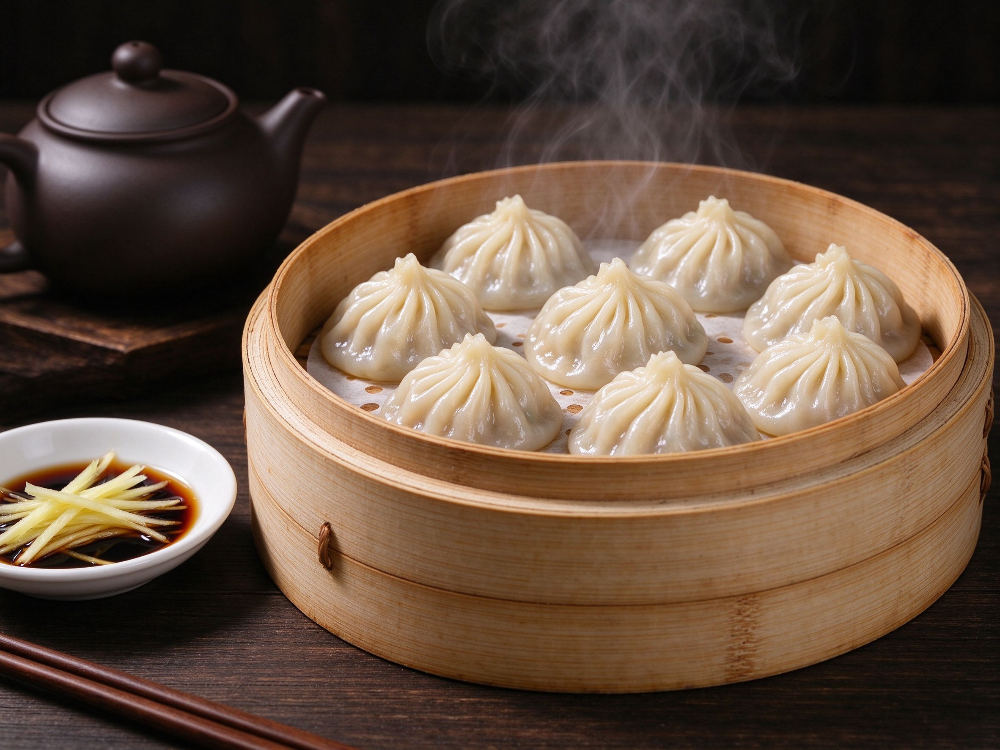

How to Make Soup Dumplings (Xiao Long Bao) at Home
Xiao long bao look like magic, but the "magic" is one simple trick: the soup starts as chilled gelatin, wrapped inside the dumpling, and melts into broth as it steams. Once you understand that, soup dumplings are just dumplings — and you can absolutely make them at home.
Why Is There Soup Inside?
Traditional xiao long bao gets its broth from aspic — a rich stock (usually pork or chicken) simmered with collagen-rich bones, then chilled until it sets like firm Jell-O. The set gelatin is chopped into cubes and folded into the filling. In the steamer, heat melts it back into liquid. No trick, just science — and the same principle behind a great clear soup.
What You Need
For the dough
- 2 cups (250 g) all-purpose flour
- 3/4 cup (180 ml) warm water
- 1/2 tsp salt
For the soup (aspic)
- 2 cups chicken or pork stock
- 1 packet unflavored gelatin (or 1 tsp agar) — the home-cook shortcut
- 1 slice ginger, 1 scallion, 1 tsp soy sauce
For the filling
- 250 g ground pork
- 1 tsp grated ginger, 1 garlic clove, minced
- 1 tbsp soy sauce, 1 tsp sesame oil, 1/2 tsp sugar, white pepper to taste
- 1/2 cup chopped chives (optional)
Cheat code: many Chinese groceries sell frozen xiao long bao skins. For the first attempt, use those and put your energy into the filling.
Step 1: Make the Soup Jelly (Day Before or Morning Of)
Warm the stock, stir in the gelatin until dissolved, add ginger, scallion, and soy sauce, then pour into a shallow tray and chill for at least 4 hours — overnight is better. You want a firm, sliceable jelly. Dice it into small cubes and keep it cold until you fill the dumplings.
Step 2: Make the Dough
Mix flour, salt, and warm water into a shaggy dough, knead for 8-10 minutes until smooth, cover and rest 30 minutes. Resting is not optional — it's what lets you roll the skin thin without tearing. For a full dumpling primer, see our dumpling guide; xiao long bao skins are just rolled thinner.
Step 3: Roll Thin Skins
Divide the dough into 20-24 pieces, keep them covered, and roll each into a 3-inch circle, thinner at the edges than the center. The skin should be almost translucent — thin enough that you can read through it.
Step 4: Fill and Pleat
Mix the chilled ground pork with seasonings, then gently fold in the diced aspic — keep it cold so the jelly doesn't melt before steaming. Place a spoonful in the center of a skin, pleat the edges into a little pouch (10-14 pleats is plenty for home), pinch the top closed completely — a leak means no soup. Rest the finished dumplings in the fridge on a lightly floured tray while you make the rest.
Step 5: Steam and Eat
Line a steamer with parchment or cabbage leaves, arrange the dumplings an inch apart, and steam over rolling-boil water for 8-10 minutes. Serve immediately in the steamer with a dipping sauce of black vinegar and slivered ginger. The ritual matters: bite a small hole, sip the soup, then eat the dumpling. It's scalding hot inside — the hole lets you enjoy the broth without burning your tongue.
If Something Goes Wrong
- No soup when you bite — the jelly melted during filling, or the top wasn't sealed. Keep everything cold and pinch hard.
- Skin tears — dough was too dry or rolled too thin. Rest it longer and flour lightly.
- Dumplings stick — steam on parchment or cabbage leaves, never bare.
Soup dumplings are a weekend project, not a weeknight meal — but the first time you bite into one and the broth floods your mouth, you'll understand why whole restaurants in Shanghai are built around them.